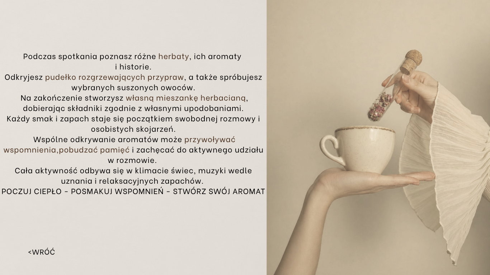

Podczas spotkania poznasz różne herbaty, ich aromaty i historie. Odkryjesz pudełko rozgrzewających przypraw, a także spróbujesz wybranych suszonych owoców.
Na zakończenie stworzysz własną mieszankę herbacianą, dobierając składniki zgodnie z własnymi upodobaniami.
Każdy smak i zapach staje się początkiem swobodnej rozmowy i osobistych skojarzeń. Wspólne odkrywanie aromatów może przywoływać wspomnienia, pobudzać pamięć i zachęcać do aktywnego udziału w rozmowie.
Cała aktywność odbywa się w klimacie świec, muzyki wedle uznania i relaksacyjnych zapachów.
POCZUJ CIEPŁO - POSMAKUJ WSPOMNIEŃ - STWÓRZ SWÓJ AROMAT
